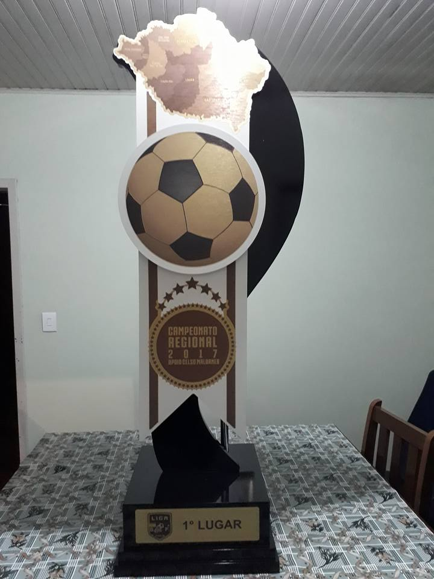

Empate no 1º jogo da final do Regional
O Campo dos Amadores, com excelente público, neste domingo foi palco do 1º jogo da decisão do Campeonato Regional, aliás um belo jogo de futebol entre Amigos FC e Madureira. No primeiro tempo tempo com dois gols de Marquinhos o Amigos fez 2 a 0, Jhou Jhou descontou e o artilheiro Fabrício ampliou para 3 a 1, quem pensou que seria goleada enganou-se, pois no segundo tempo o Madureira correu atrás do prejuízo e empatou em 3 a 3, com gols de Jhou Jhou e Dudu. Excelente arbitragem de Charles Neves, Rodrigo Santos e Robert Santana. A grande final será no Estádio Natal Zilli em Urubici no próximo domingo as 16h onde o Madureira joga por empate como bônus de melhor campanha, o amigos terá que vencer para levantar o belíssimo troféu de 1,5m de altura e que pesa 22 quilos oferecido por Celso Maldaner. O campeão ainda leva 3 mil reais, o segundo 2 mil reais e o terceiro um mil reais.